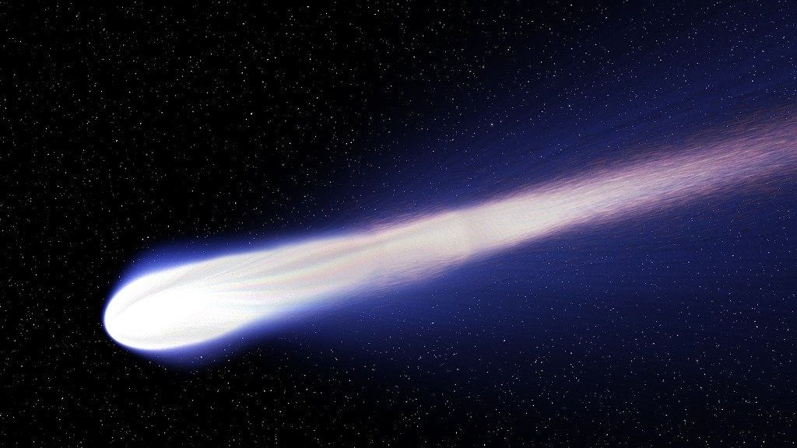
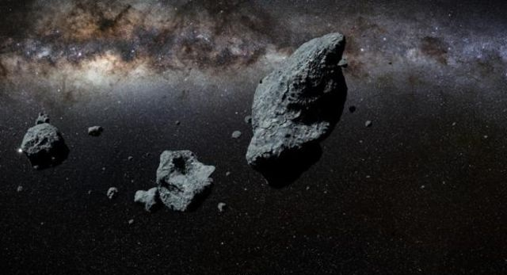
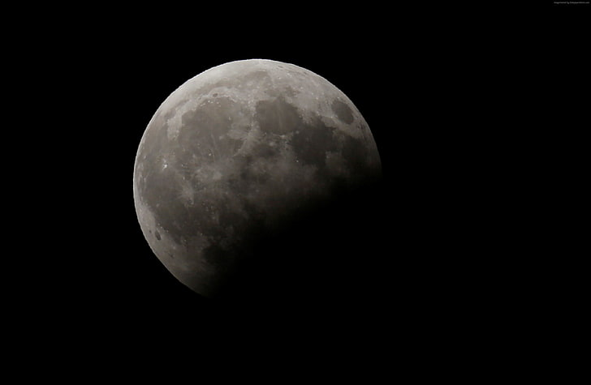

Planet adalah benda astronomi yang mengorbit sebuah bintang yang cukup besar untuk memiliki gravitasi sendiri.

KOMET
Komet adalah benda langit yang mengelilingi matahari dengan garis edar berbentuk elips/lonjong, parabolis, atau hiperbolis.

ASTEROID
Asteroid, disebut juga planet minor atau planetoid, adalah benda berukuran lebih kecil daripada planet, tetapi lebih besar daripada meteoroid, umumnya terdapat di bagian dalam Tata Surya.

SATELIT
Satelit alami adalah objek angkasa yang mengorbit sebuah planet, planet katai, atau benda lain yang lebih besar daripada dirinya (atau bahkan terkadang satelit alami lainnya). Dalam Tata Surya, terdapat 137 satelit alami dengan berbagai ukuran yang mengorbit 6 planet.